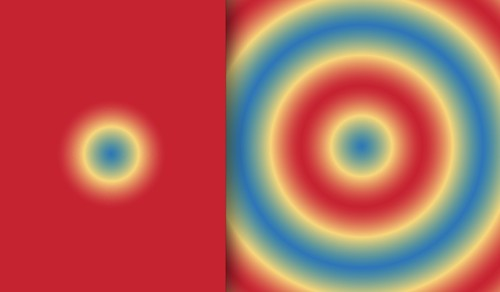
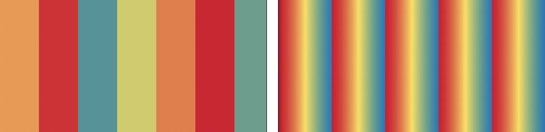
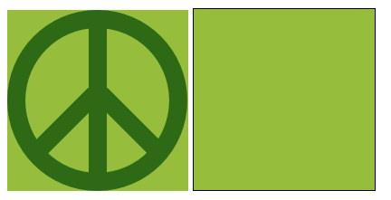
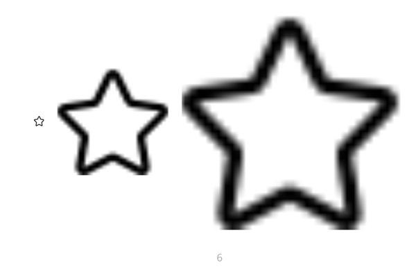
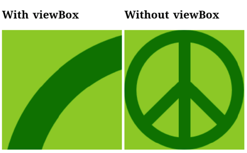

-
- Gradients
Не работает
spreadMethod="reflect". Слева Firefox, справа Chrome:При
gradientUnits="userSpaceOnUse" spreadMethod="repeatнекорректно повторяются полосы. Слева Firefox, справа Chrome:Некорректно работает
spreadMethod="repeat. Слева Firefox, справа Chrome:
-
- background
-
Если элементу с фоном добавить рамку, фон может пропасть
 -
При растягивании фона картинки "мыльные"

-
- Font
- No support.
- background
-
Если у SVG задан viewBox - фон будет растянут

- Inline SVG
- No support.